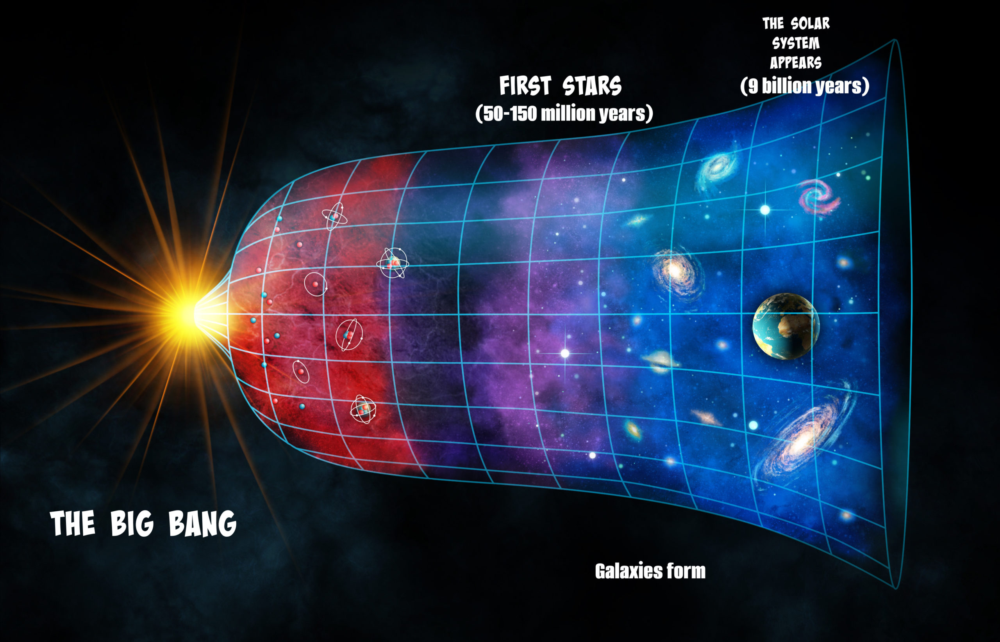

The best-supported theory of our universe's origin centers on an event known as the big bang. This theory was born of the observation that other galaxies are moving away from our own at great speed in all directions, as if they had all been propelled by an ancient explosive force. A Belgian priest named Georges Lemaître first suggested the big bang theory in the 1931, when he theorized that the universe began from a single primordial atom. The idea received major boosts from Edwin Hubble's observations that galaxies are speeding away from us in all directions, as well as from the 1960s discovery of cosmic microwave radiation—interpreted as echoes of the big bang—by Arno Penzias and Robert Wilson. Further work has helped clarify the big bang's tempo. Here’s the theory: In the first 10^-43 seconds of its existence, the universe was very compact, less than a million billion billionth the size of a single atom. It's thought that at such an incomprehensibly dense, energetic state, the four fundamental forces—gravity, electromagnetism, and the strong and weak nuclear forces—were forged into a single force, but our current theories haven't yet figured out how a single, unified force would work. To pull this off, we'd need to know how gravity works on the subatomic scale, but we currently don't. It's also thought that the extremely close quarters allowed the universe's very first particles to mix, mingle, and settle into roughly the same temperature. Then, in an unimaginably small fraction of a second, all that matter and energy expanded outward more or less evenly, with tiny variations provided by fluctuations on the quantum scale. That model of breakneck expansion, called inflation, may explain why the universe has such an even temperature and distribution of matter. After inflation, the universe continued to expand but at a much slower rate. It's still unclear what exactly powered inflation. Aftermath of cosmic inflation As time passed and matter cooled, more diverse kinds of particles began to form, and they eventually condensed into the stars and galaxies of our present universe. By the time the universe was a billionth of a second old, the universe had cooled down enough for the four fundamental forces to separate from one another. The universe's fundamental particles also formed. It was still so hot, though, that these particles hadn't yet assembled into many of the subatomic particles we have today, such as the proton. As the universe kept expanding, this piping-hot primordial soup—called the quark-gluon plasma—continued to cool. Some particle colliders, such as CERN's Large Hadron Collider, are powerful enough to re-create the quark-gluon plasma. Radiation in the early universe was so intense that colliding photons could form pairs of particles made of matter and antimatter, which is like regular matter in every way except with the opposite electrical charge. It's thought that the early universe contained equal amounts of matter and antimatter. But as the universe cooled, photons no longer packed enough punch to make matter-antimatter pairs. So like an extreme game of musical chairs, many particles of matter and antimatter paired off and annihilated one another. Somehow, some excess matter survived—and it's now the stuff that people, planets, and galaxies are made of. Our existence is a clear sign that the laws of nature treat matter and antimatter slightly differently. Researchers have experimentally observed this rule imbalance, called CP violation, in action. Physicists are still trying to figure out exactly how matter won out in the early universe.
There wasn't a single star in the universe until about 180 million years after the big bang. It took that long for gravity to gather clouds of hydrogen and forge them into stars. Many physicists think that vast clouds of dark matter, a still-unknown material that outweighs visible matter by more than five to one, provided a gravitational scaffold for the first galaxies and stars. Once the universe's first stars ignited, the light they unleashed packed enough punch to once again strip electrons from neutral atoms, a key chapter of the universe called reionization. In February 2018, an Australian team announced that they may have detected signs of this “cosmic dawn.” By 400 million years after the big bang, the first galaxies were born. In the billions of years since, stars, galaxies, and clusters of galaxies have formed and re-formed—eventually yielding our home galaxy, the Milky Way, and our cosmic home, the solar system. Even now the universe is expanding, and to astronomers' surprise, the pace of expansion is accelerating. It's thought that this acceleration is driven by a force that repels gravity called dark energy. We still don't know what dark energy is, but it’s thought that it makes up 68 percent of the universe's total matter and energy. Dark matter makes up another 27 percent. In essence, all the matter you've ever seen—from your first love to the stars overhead—makes up less than five percent of the universe.